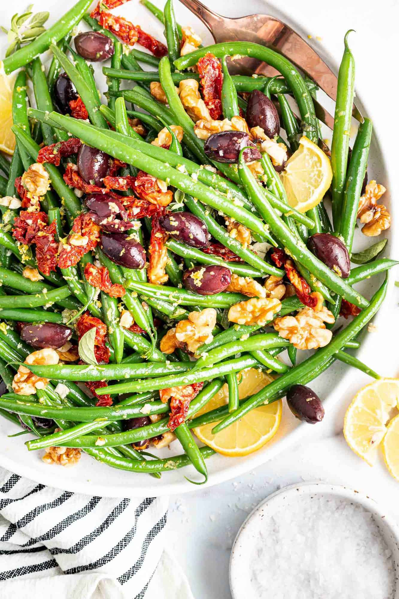

Green Beans wiith Olives and Tomatoes

Description
A recipe to make fast, fresh green beans with kalamata olives and tomatoes.
Ingrediants
- Olive Oil (1 tbsp)
- Minced Garlic (1 clove)
- Steamed Green Beans (4 cups)
- Kalamata Olives (1/4 cup)
- Chopped Tomatoes (2 cups)
- Chopped Herbs (3 tbsps)
- Salt (1/2 tsp)
- Black Pepper (1/2 tsp)
- Red Wine Vinegar (1 tbsp)
Steps
- Heat oil in a large pot over low heat.
- Add garlic; cook until fragrant, 45 to 60 seconds.
- Add green beans, tomatoes, olives, herbs, salt, pepper; toss. Drizzle with vinegar and toss to coat.
- Garnish with fresh herbs.
- Enjoy your meal!